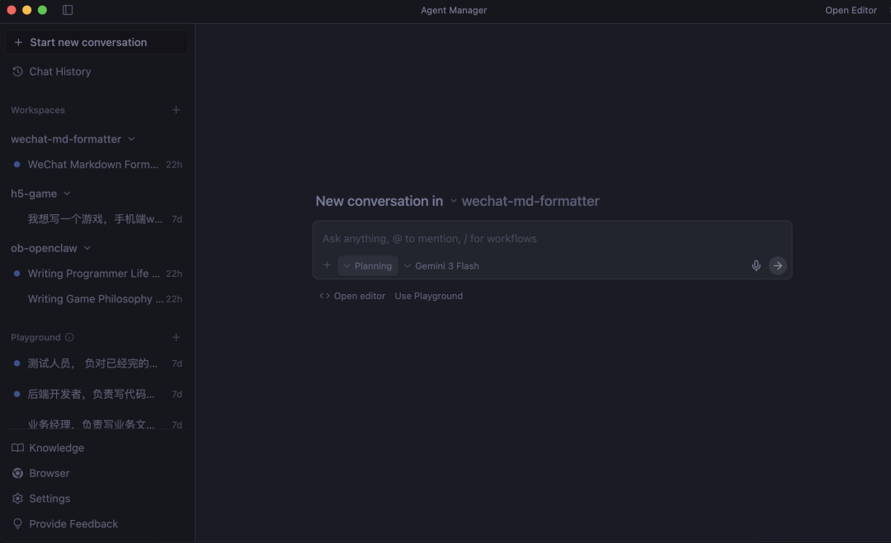
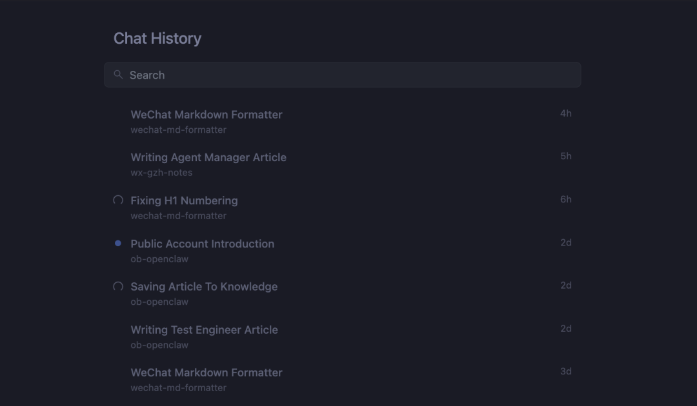
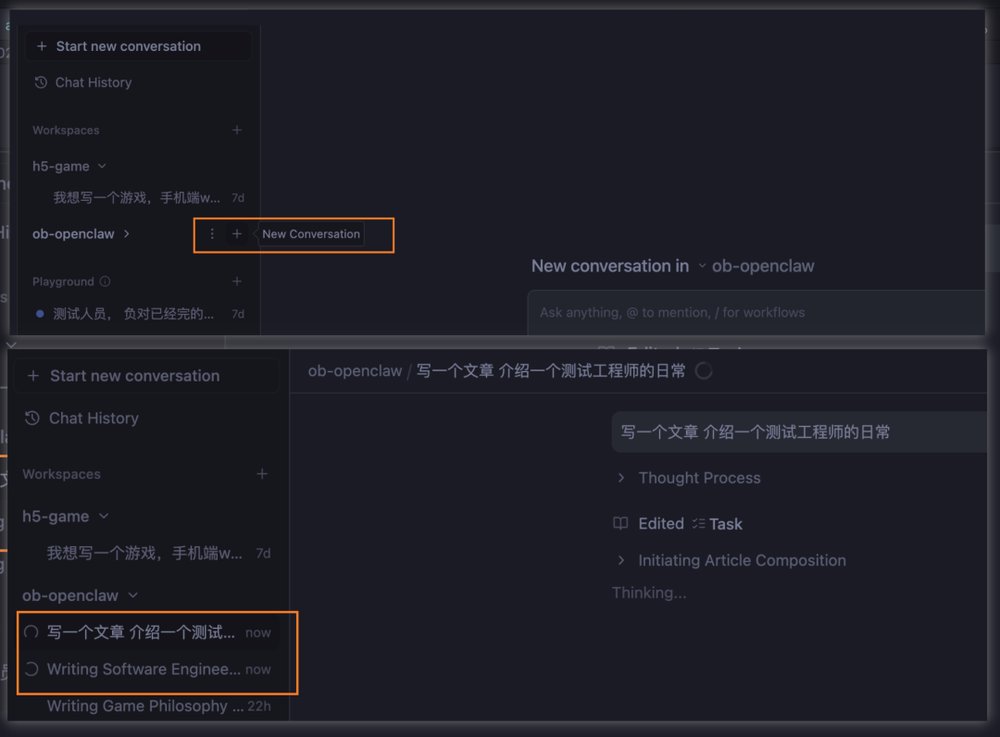
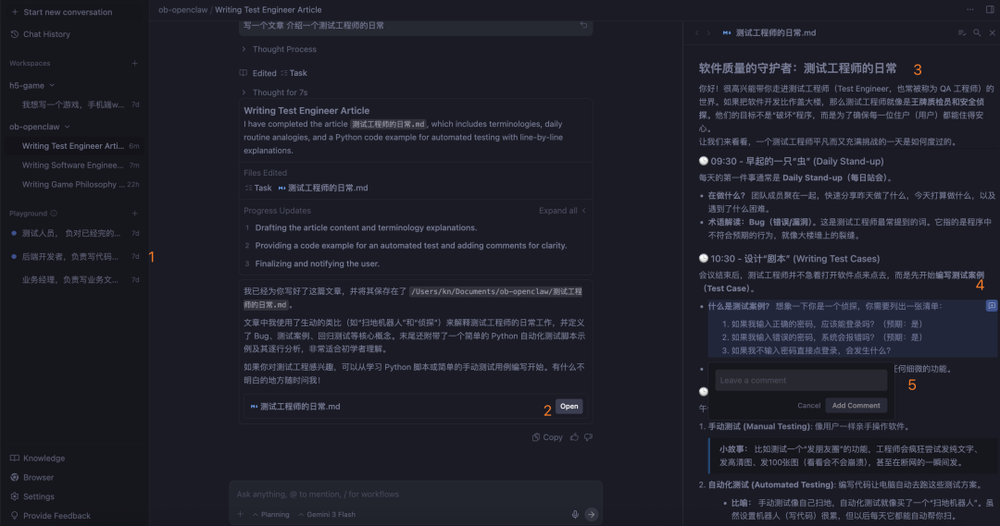
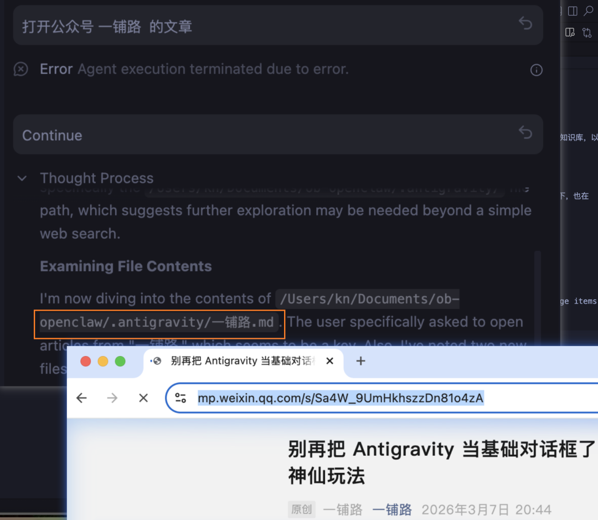
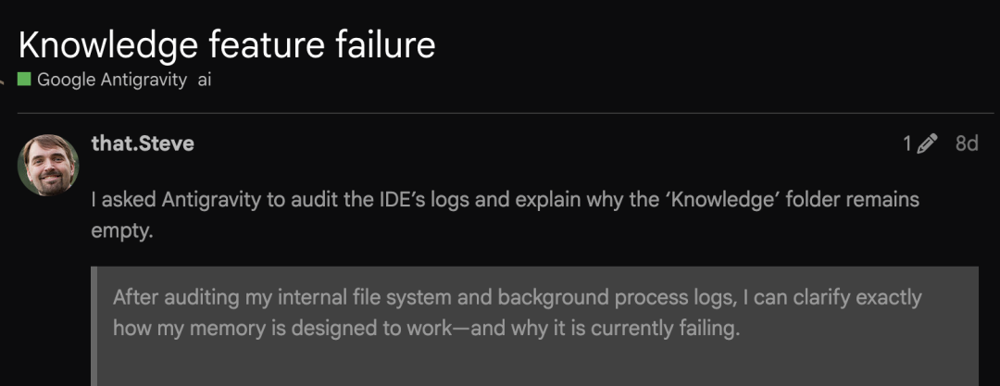
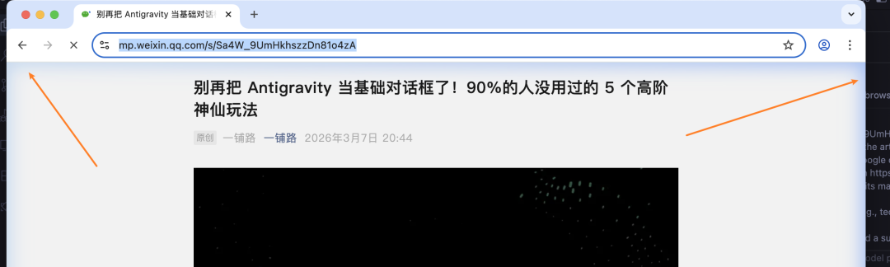

| ai tool | 2026.03 |
| IDEAI |
Antigravity 有一些高阶玩法，可能很多人都没有涉及到。我在 《别再把 Antigravity 当基础对话框了！90%的人没用过的 5 个高阶神仙玩法》提到了“多任务”点。 评论区里有人在问要怎么用 多 agent 。现在介绍一下 Antigravity 的 Agent Manager。让你成为一个高阶的 Antigravity 使用者。
Agent Manager
Agent Manager 就是为了管理众多的 Agent，是一个 多任务调度器。 我们可以监控和协调多个具备不同能力的 Agent。
在 Antigravity 的 右上角有 Open Agent Manager 可以直接点进去， 也可用 按 Ctrl+E（Mac 是 Cmd+E）快捷键进去。

界面全景
打开 Agent Manager 之后，在左边的 Sidebar 有 Workspace （工作区）。 我们的项目都在在这里显示出来。
下面还有一个 Playground（演练场）, 独立的工作区，我们可以理解为一个草稿区域，比较自由的区域，可以即兴让它干点活，做一点测试。
重点是它不会污染我们的正式项目。
Workspace 的上面是一个 Chat History 可以查询一个历史任务。

最下面的还有 :
Knowledge 知识库，所有 Agent 都可以“共享”这个知识库。我们可以把一些规范或需求文档放在这里。 Browser 浏览器 Agent。 这是一个可以上网的 Agent，可以搜索信息, 如果你是 Web 开发人员，可以用这个进行自动化测试。 Settings 一些设置。
Agent 多任务
如何同时处理多个任务呢？
我分别前后创建了两个 New Conversation, 一个让它写一篇文章：介绍一下软件工程师的日常，另一个让它写 ：介绍一下测试工程师的日常。
这两个任务就会同时并发的执行。如图：

它分分别创建了 Implementation Plan 让你确认是否处理。点 Open 可以右侧看到 Implementation Plan的详细内容。
每一个节点都有一个小 + (如图中的标识3) 点击之后 ，可以 让你对这个小节点进行提修改建议。在让它执行时，会根据你的建议进行修改。

所以，当我们在处理同一个项目时，可以创建多个 Conversation 来同时处理不同的任务。
当然，这里有点要注意的是，它可能改到同一个文件。那么我们就在明确它在哪个目录下操作， 或者在完成之后进行 Review 检查。
Knowledge 库
Antigravity 支持了知识库， 所有 Agent 都可以共享这个知识库。 在 Settings 中有一个配置开关，可以了随时关闭掉。
知识库的获取主要有两种方式：
手动喂料： 我们可以在 .antigravity/ 下放 .pdf、.md 或 .txt 文档。antigravity 会自己这个找到对应的知识库。
.antigravity/ 下创建一个 一铺路.md 说明如果想到打开一铺路的公众号，就打开我指定的链接。
主动学习: 当我们在在对话交流中，有一些比较有价值的点，Agent 会自动识别出来，并生成 Knowledge Items（知识项）。它会提取逻辑要点，存入知识库，以便在下一次对话中快速调取。我们也可以明确地告诉它，让它生成 Knowledge Items， 保存起来。
我试了好几次结果，让它保存结果，它保存到项目的当前目录下， 或者 保存到 .antigravity/ 下。但是结果都 Knowledge 的页面都空的。
discuss.ai.google.dev 找到了同样的问题 Antigravity Knowledge Feature Failure。
目前很多用户（甚至包括 Pro/Ultra 付费用户）反映，即便使用了数周，Knowledge 列表依然显示 "The agent has not generated any knowledge items yet"。这被社区定义为非功能性故障。
有时候我们容易先怀疑自己！其实这并不好。无论什么时候都要自信一些。加上最近token 额度的缩水和刷新机制的改变。 一度认为是自己不小心，用多了，记错了。
Browser浏览器 Agent
Browser Agent 可以直接打开浏览器，进行自动化操作。打开一个带有蓝色边框的特殊 Chrome 窗口.
这个目前用工作上的，可以让 antigravity 进行自动化测试。 解放一些重复性的工作。
主要的功能：
实时搜索如果 Agent 遇到过时的知识或不熟悉的 API 时，可以让它去搜索相关的最新的技术文档。 自动化测试 在你修改了代码后，它可以自动打开，点击按钮、填写表单，并截屏确认 UI 是否正确。 端到端操作 它可以登录特定网站执行操作，比如下载依赖包、查阅云控制台日志、甚至帮你查查天气。
Browser Agent 不仅能带回文字，它还会生成 Artifacts（如录屏或截图）。如果你在写 UI 代码，它可以直接把渲染出来的网页截图贴在右栏给你 Review
也有要注意的地方:
当 Browser Agent正在操作页面时，建议不要手动点击那个蓝框窗口，否则 Agent 的坐标计算会乱掉可能因为需要授权导致“卡住”，需要人工登录验证之后才行。

写在最后
Antigravity 的 Agent Manager 不再是我们所知道的编程助手“一次只能聊一件事”的那样。它不仅仅是一个 UI 上的管理器，更是一个多核任务引擎，通过 Workspace、Knowledge 和 Browser 的协同，让 AI 真正从“对话机器人”进化成了你的“虚拟技术合伙人”。
在实际使用中，如何更好地提高效率，还是要花些时间去探索的。
后来会继续分享 Antigravity skills 的 用法。
引用链接
[1] Antigravity Knowledge Feature Failure: https://discuss.ai.google.dev/t/knowledge-feature-failure/129021